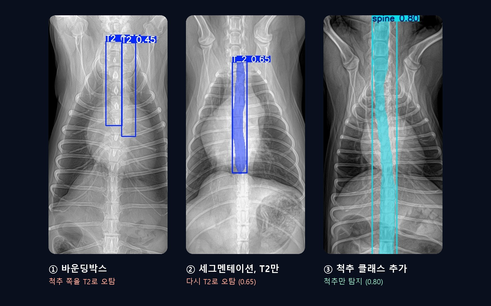
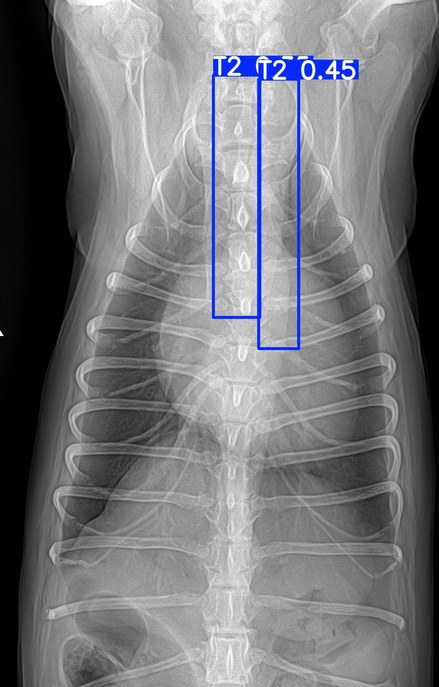
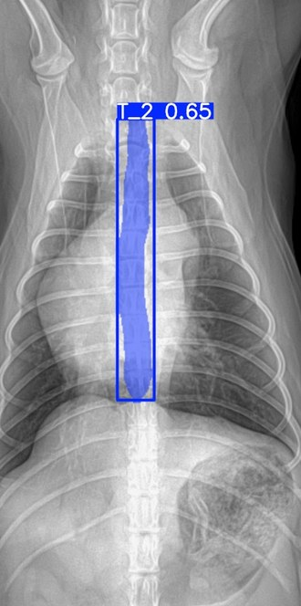
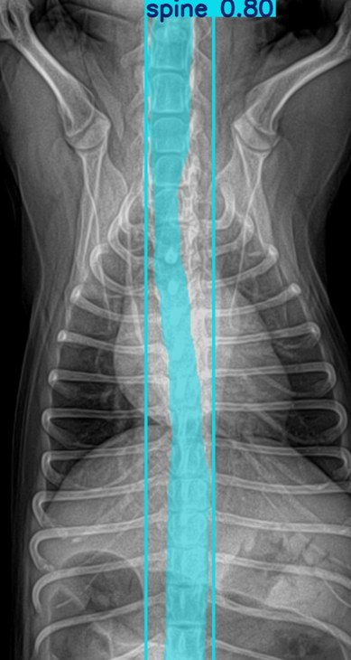
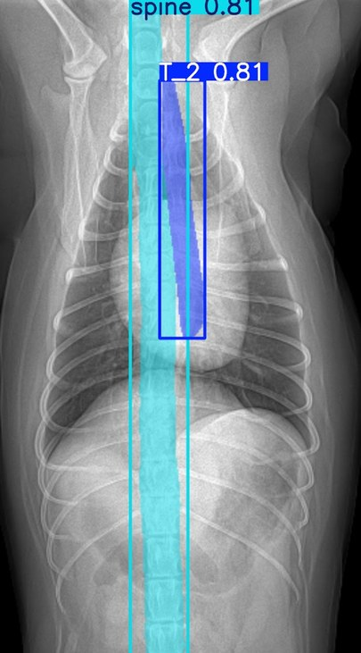

Case Study · Computer Vision
X-MEN
동물 X-ray 자세 판별
흉골과 척추를 헷갈리던 오탐을,
라벨 방식을 바꿔 줄였습니다.
자세가 틀린 X-ray를 찍자마자 걸러 재촬영을 줄이는 모델 · 수의학과 협력
- 본인
- T2(흉골과 척추 정렬) 탐지. 라벨 설계, 세그멘테이션 데이터 제작, YOLO 학습과 실험
- 팀원
- 고건영(팀장): T3 척추 가시돌기 위치 / 오승주: T1 갈비뼈 13개와 폐 노출
- T2 Precision0.863 → 0.963
척추를 별도 클래스로 나눠
정상 사진의 오탐을 줄임 - T2 mAP50-950.32 → 0.55
같은 198장, YOLOv8
세그멘테이션 모델 - 정상 사진의 T2 오탐없음
척추 라벨 180개 추가 후
신뢰도 임계값 0.65

01 자세가 틀린 X-ray는 다시 찍어야 합니다.
동물은 촬영 중에 움직이기 쉬워 자세가 틀린 사진이 자주 나오고, 그러면 다시 찍어야 합니다. 수의학과의 촬영 실습에서 찍은 직후 자세가 맞는지 자동으로 판별하는 모델을 만드는 수업 과제였습니다.
판정 기준 세 가지를 팀원이 하나씩 맡았고, 하나라도 어긋나면 실패로 판정합니다.
- T1갈비뼈 13개와 폐 전체가 보여야 함
- T2 · 본인 담당흉골이 척추와 일직선이어야 함
- T3척추 가시돌기가 가운데 있어야 함
02 모델과 전처리를 바꿔도 오탐은 그대로였습니다.
주간 보고서에 남긴 순서 그대로입니다. 효과가 없었던 시도도 함께 적었습니다.
| 주차 | 시도 | 결과 |
|---|---|---|
| 1주 | YOLOv5로 T2 기본 탐지 모델 | 배경을 T2로 잡고, 실제 T2 정확도 25% |
| 3주 | 개의 흉골 해부학(6~8개 분절) 공부, 혼동행렬 분석 | 라벨 밖의 뼈를 T2로 잡는 것 같다고 보고 라벨을 의심 |
| 4주 | YOLOv8과 YOLO11 비교, 샤프닝·밝기 전처리 | 차이 거의 없음 |
| 5–6주 | OpenCV로 이진화·Canny·Sobel 비교, Sobel 적용 학습 | 모델마다 엇갈림. YOLO11은 mAP50 0.831 → 0.869, YOLOv8은 하락 |
| 7주 | 세그멘테이션 폴리곤 라벨을 labelme로 직접 제작 | 테스트 18장에서 T2를 잘 탐지 |
| 8주 | 정상 사진으로 다시 시험 | 척추를 T2로 오인 |
| 9주 | 일반 척추 라벨 180개 추가, 척추를 별도 클래스로 학습 | 임계값 0.65에서 정상 사진의 T2 오탐 없음 |
| 10주 | YOLOv8 → YOLO11, 하이퍼파라미터 조정 | T2 재현율 0.722 → 0.861 |
03 모델보다 라벨 방식을 바꾸기로 했습니다.
흉골 해부학을 공부한 뒤 결과를 다시 보니, 박스는 흉골을 잘 감싸는데도 혼동행렬이 나빴습니다. X-ray에서 흉골과 척추 가시돌기가 비슷하게 보여 정상 사진에서도 척추 쪽을 T2로 잡고 있었습니다. 모델을 바꾸고 전처리를 더해도 그대로였기 때문에, 모델보다 무엇을 가르치는지(라벨)가 문제라고 판단했습니다.
그래서 두 단계로 바꿨습니다. 먼저 사각 박스 대신 뼈 모양을 따라 그리는 세그멘테이션 라벨을 직접 만들었습니다. T2만 학습하자 정상 사진에서 척추를 다시 T2로 잡아, 척추를 “T2가 아닌 것”으로 따로 가르치도록 일반 척추 라벨 180개를 더해 두 클래스를 함께 학습했습니다.

중간발표 한계로 정리

모양은 맞췄지만 구분은 못 함

정상 사진에서 T2 없음
04 재현율은 그대로 두고, 잘못 잡는 것을 줄였습니다.
| 모델 (같은 198장) | Precision | Recall | mAP50 | mAP50-95 |
|---|---|---|---|---|
| YOLOv8 · T2만 | 0.863 | 0.722 | 0.945 | 0.32 |
| YOLOv8 · 척추 추가 | 0.963 | 0.722 | 0.845 | 0.55 |
| YOLO11 · 척추 추가, 조정 | 0.969 | 0.861 | 0.925 | 0.625 |
척추를 따로 가르치자 재현율은 그대로였고, 정상 사진에서 T2로 잘못 잡던 것이 줄어 정밀도가 0.863에서 0.963으로 올랐습니다. 위치를 더 엄격하게 보는 mAP50-95도 0.32에서 0.55로 올랐습니다. 반면 mAP50은 0.945에서 0.845로 낮아져, 하나의 지표만 보고 판단하지 않았습니다.
이후 같은 데이터에서 YOLO11로 바꾸고 하이퍼파라미터를 조정해 재현율을 0.722에서 0.861로 올렸습니다.

해석 범위와 프로젝트 정보
- 데이터: 세그멘테이션 198장(학습 144, 검증 36, 테스트 18). 수의학 전공이 아니어서 눈으로 T2를 찾지 못한 사진은 7주차에 데이터에서 뺐습니다.
- 검증 범위: 수업 과제로 외부 데이터나 현장 검증은 하지 않았습니다. 수치는 팀 중간·기말 발표 자료와 주간 보고서의 표입니다.
- 수치 출처: 기말발표에는 YOLOv8 결과까지 실렸고, YOLO11 결과(재현율 0.861)는 10주차 보고서에 있습니다. 1주차 수치는 YOLOv5 기본 모델의 결과입니다.
- 팀: 충북대 2024년 2학기 인공지능 수업 3인 팀(X-MANS). 팀 전체로는 YOLO, ResNet-50, Faster R-CNN, DETR, EfficientNet, ViT 등을 비교했고, 본인은 T2의 YOLO 계열을 맡았습니다.
- 남은 과제: 기말발표 때는 척추 세그멘테이션의 가운데가 끊기는 문제가 있었고(10주차 조정 후 개선), DeepLab v3+나 SAM을 다음 시도로 정리했습니다.